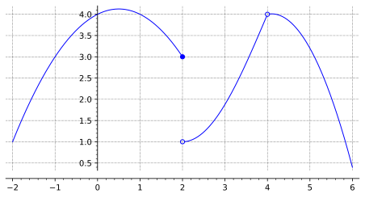

1.
Answer the following questions based on the graph shown. If the answer does not exist, write ‘DNE’.

\(\lim_{x\rightarrow 2^-}f(x) = \fillinmath{X}\)
\(\lim_{x\rightarrow 2^+}f(x) = \fillinmath{X}\)
\(\lim_{x\rightarrow 2}f(x) = \fillinmath{X}\)
\(f(2) = \fillinmath{X} \)
\(\lim_{x\rightarrow 4^-}f(x) = \fillinmath{X}\)
\(\lim_{x\rightarrow 4^+}f(x) = \fillinmath{X}\)
\(\lim_{x\rightarrow 4}f(x) = \fillinmath{X}\)
\(f(4) = \fillinmath{X}\)
Solution.
\(\lim_{x\rightarrow 2^-}f(x) = 3,\)
\(\lim_{x\rightarrow 2^+}f(x) = 1,\)
\(\lim_{x\rightarrow 2}f(x) = \text{ DNE},\)
\(f(2) = 3,\)
\(\lim_{x\rightarrow 4^-}f(x) = 4,\)
\(\lim_{x\rightarrow 4^+}f(x) = 4,\)
\(\lim_{x\rightarrow 4}f(x) = 4,\)
\(f(4) = \text{ DNE}.\)